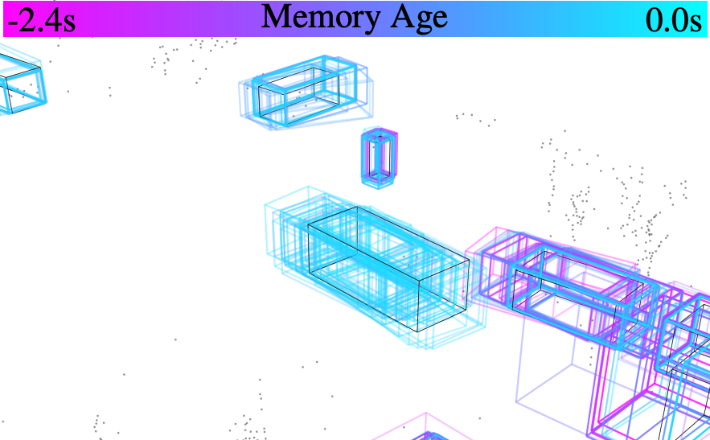
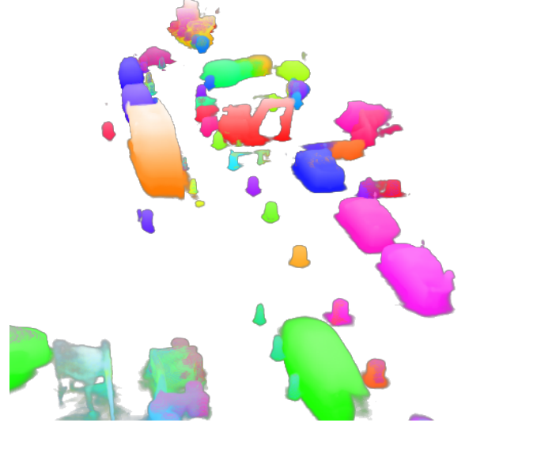
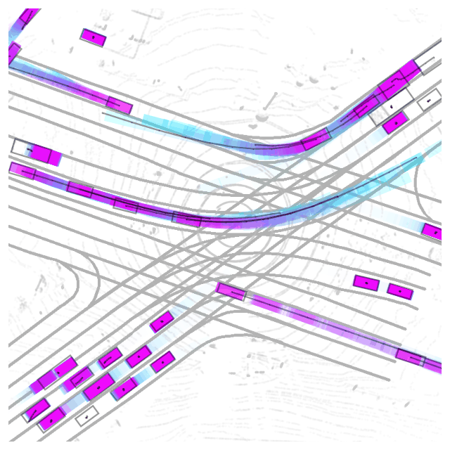
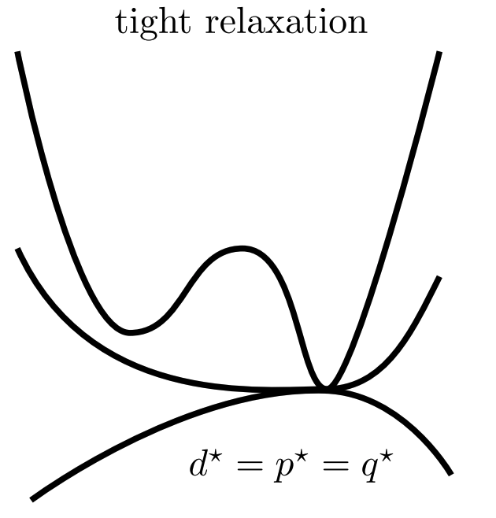
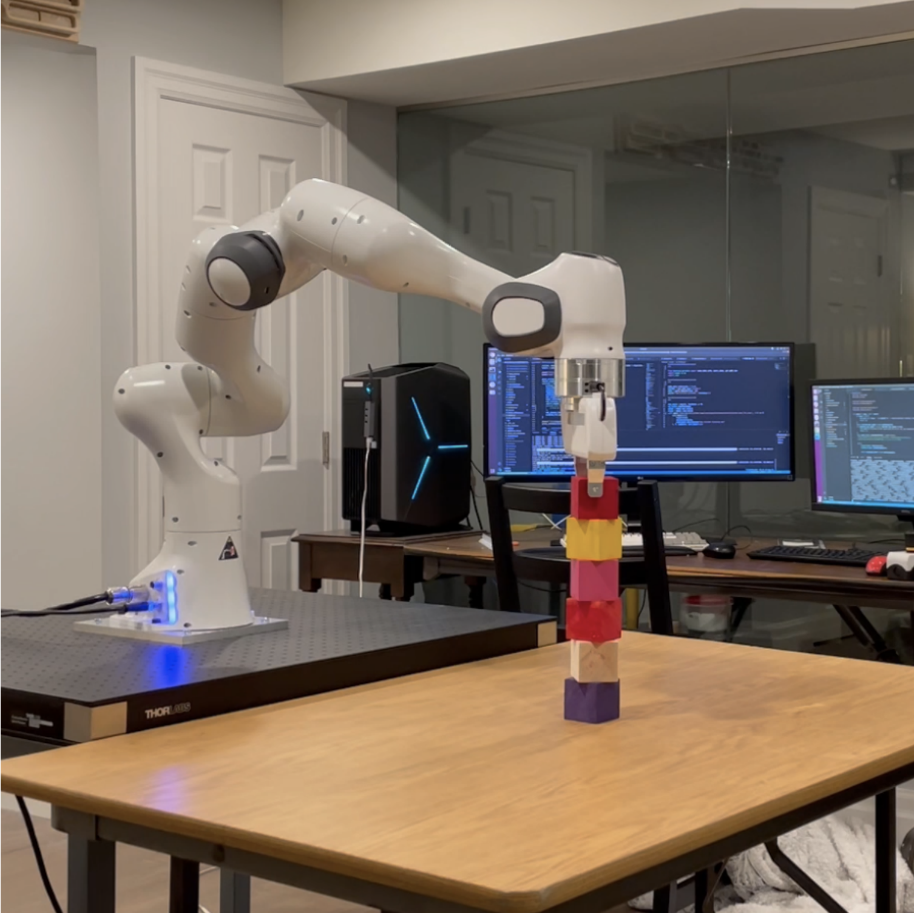
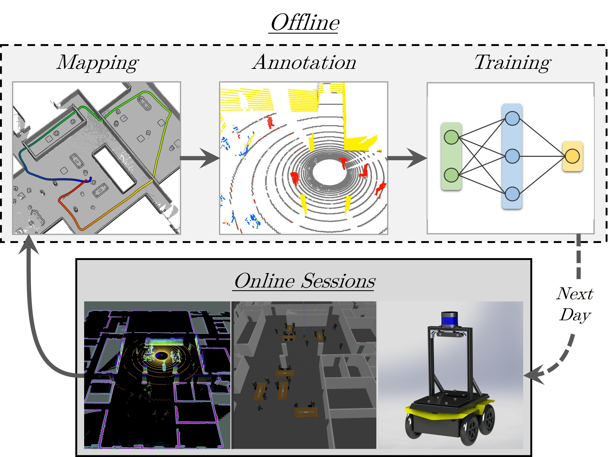
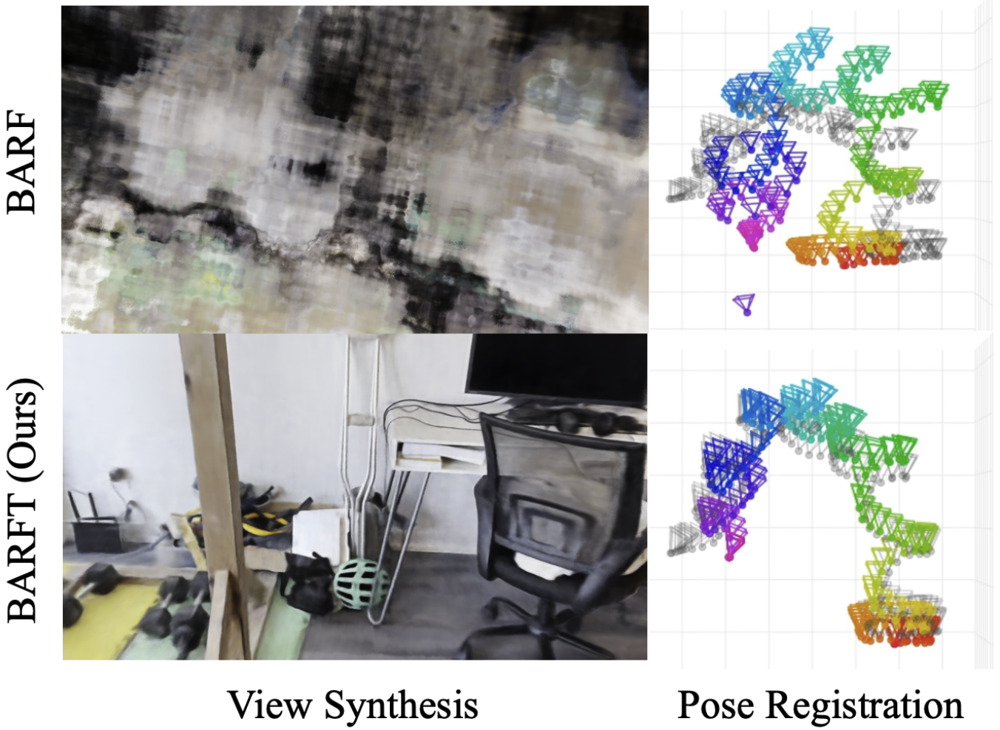
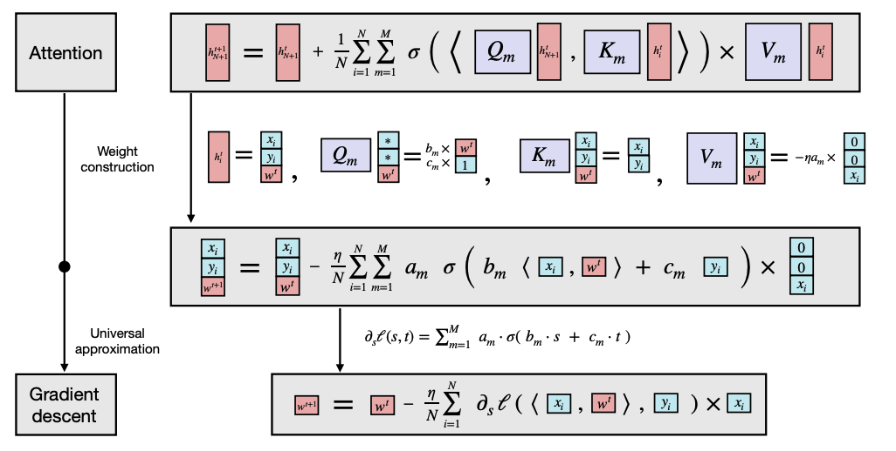
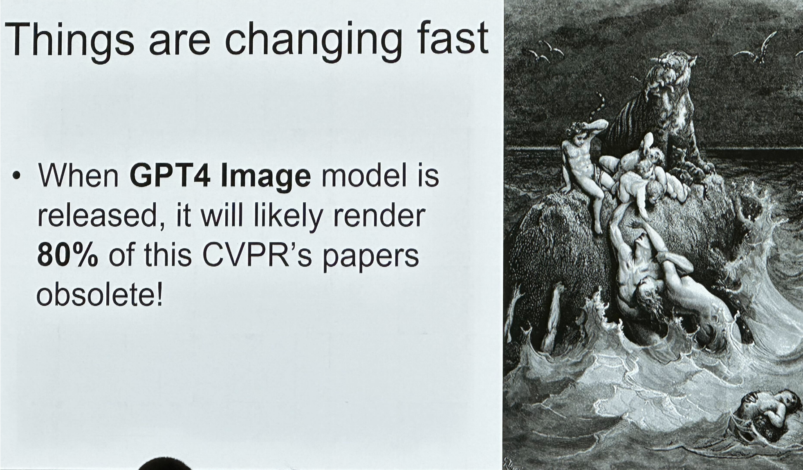
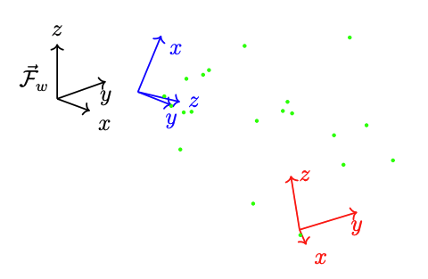

Ben Agro
I am an engineer and researcher working on Tesla's Robotaxi. I am focused on bringing machine intelligence in contact with reality. Outside of work I love rock climbing.
Work
As part of the Fleet Learning Team under Phil Duan,
I am working on end-to-end driving policies, from pretraining to RL. I made foundational
contributions to FSD v14.* and the first unsupervised Robotaxi.
I was a researcher at Waabi working on next-generation autonomy
systems under Sergio Casas and Raquel Urtasun (who is also my PhD supervisor).
I was a research intern at the Robotics Vision and Learning
Lab supervised by Florian Shkurti.
We were working on learning methods for task and motion planning, and I developed a new algorithm
for PDDLStream that learned-task specific
heuristics for expanding the space of possible robot actions.
I was a research intern at the Autonomous Space and
Robotics Lab supervised by Tim Barfoot.
We worked on self-supervised semantic LiDAR segmentation for autonomous navigation. I developed a
simulation of a complex indoor environment complete with dynamic actors and an
augmented navigation stack used to train and evaluate our method.
Notes
Climbing
I love bouldering, and try to get outside as much as possible. My current goal is to send
V13 V14.
- Photo collages: Yosemite (2025–26), Bishop (2025).
- Sendage: Outdoor sends.
- Other media: Squamish trip (2022), Vegas trip (2023), training videos, and Instagram.
Writing
News
- June 20, 2023: I'll be at CVPR2024 to present UnO!
- June 20, 2023: I'll be at CVPR2023 to present ImplicitO!
- June 12, 2023: Top U of T undergraduate Ben Agro is taking his passion for research into a direct-entry PhD.
Publications

How can we embue object detectors with learned long term memory? Achieves first place on the Waymo leaderboard for online non-ensemble methods without test-time augmentations.

UnO + new sparse archiecture for better details and performance + understanding of instances.

Previous works perform object detection and trajectory forecasting through cascading modules. We reformulate
this as a single unified trajectory refinement task, which removes the problem of compounding errors.
To fulfill this task, we propose a flexible transformer refinement archiecture that is easily extensible to
alternative input modalities and tasks.
We introduce a foundation model for the physical world that learns to perceive and forecast
4D (spatio-temporal) occupancy fields with self-supervision from LiDAR data. We show
that this model can be transfered to a variety of downstream tasks, such as LiDAR forecasting
and semantic birds eye view occupancy forecasting.
We came first in the CVPR 2024 Argoverse 2 LiDAR 4D Occupancy Challenge.

During my undergraduate thesis, I spent much time
trying to find redundant constraints to
tightenan optimization problem such that it was globally optimal. Finding these redundant constraints was time-consuming and tedious. This paper presents an automated method for finding redundant constraints for optimization problems.
A new approach to perception and motion-forcasting for self-driving vehicles using
a neural network to implicitly represent future occupancy and flow directly
from sensor data.

Presents a new algorithm for PDDLStream that uses
a graph neural network to search for geometrically feasible plans in a "best first" manner.

A self-supervised learning approach for semantic segmentation of LiDAR over repeated navigation
sessions.
Past Projects

A framework for training NeRFs with unknown (learned) camera poses.

This report distills the key ideas behind the paper Transformers as Statisticians: Provable In-Context Learning with In-Context Algorithm Selection.

A zero-shot video retrieval system leveraging open-source Vision-Language models.

This is my undergrad thesis for Engineering Science at UofT under Prof. Tim Barfoot.
We investigated how to make the problem of stereo localization (determining
the pose of a stereo camera with respect to observed landmarks) globally optimal.

I built and programmed an autonomous drone with reliable onboard SLAM and vision-only obstacle
avoidance.
The simulator I built for this project is here.

I programmed a version of the popular game Geometry Dash
that runs on the original Gameboy hardware.